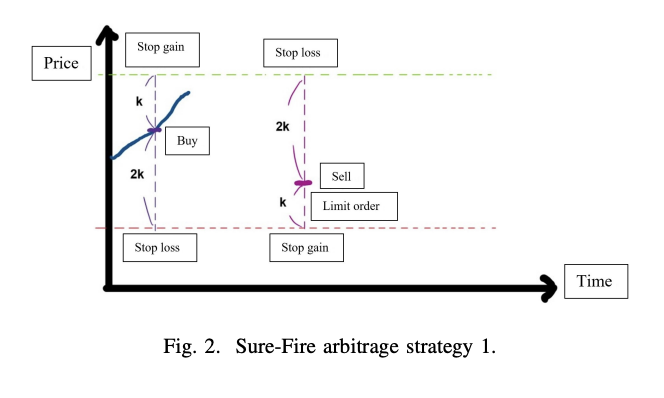
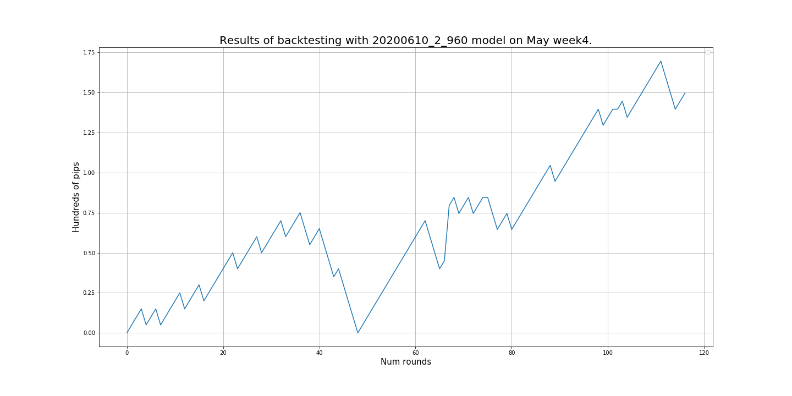

Projects
Forex Trading System with Deep Reinforcement Learning
Overview
This is an automated forex trading strategy by using the power of reinforcement learning which is a type of machine learning. The goal is to optimize a forex trading strategy and to make a profit with it on the real financial market while I am sleeping.
About this project can be separated into two sections, MVP and version 2.0.- In MVP section: I will introduce you what I had done and the result I got from the first deep reinforcement learning model.
- In version 2.0 section: I will mention what I changed, especially preprocessing in order to make a better model and will show you improved results.
MVP
First, I will list up key parts in MVP that I finished almost within a month and then I will add explanation to each of them.- SureFireStrategy
- Gramian Angular Field
- Data
- Result
- Deployment
1. SureFireStrategy
I loosely followed this paper, Deep Reinforcement Learning for Foreign Exchange Trading.
In this paper, what they tried was that tried to optimize SureFireStrategy which is a variant of the Martingale by using ConvNet as the agent in reinforcement learning in order to find patters in heatmap images encoded from time series data by Gramian Angular Field (GAF) which I will talk about later.The Sure-Fire starategy
First, as illustrated in Fig. 2, we purchase one unit at any price and set a stop-gain price of +k and a stop-loss price of −2k. At the same time, we select a price with a difference of −k to the buy price and +k to the stop-loss price and set a backhand limit order for three units. Backhand refers to engaging in the opposite behavior. The backhand of buying is selling and the backhand of selling is buying. A limit order refers to the automatic acquisition of corresponding units.

As illustrated in Fig. 3, when a limit order is triggered, and three units are successfully sold backhand, we place an additional backhand limit order, where the buy price is +k to the sell price and −k to the stop-loss price. We set the stopgain point as the difference of +k and the stop-loss point as the difference of −2k, after which an additional six units are bought.
As illustrated in Fig. 4, the limit order is triggered in the third transaction. The final price exceeded the stop-gain price of the first transaction, the stop-loss price of the second transaction, and the stop-gain price of the third transaction. In this instance, the transaction is complete. The calculation in the right block shows that the profit is +1k.
2. Gramian Angular Field (GAF)
On the left side, it shows price movement in 5 minutes time frame with 12 window size. On the right image, it is an image encoded by GAF which represents the price movement on the left side and is a sample of images that were fed into ConvNet and that were defined as the states in reinforcement learning. Each image had 4 channels that corresponded to Open, High, Low, and Close in a timeframe.
3. Data
How I got forex data was that I used a python API provided by OANDA which is a broker that I use. I was able to gather data in any major timeframe I wanted.4. Result
The below image is a result plot of training. From this plot what I could say were:- Obviously, the model had not been trained well
- Exploration and exploitation problem
- SureFireStrategy might not fit
- Data quality might be not good enough
5. Deployment
Though I had not got any model that might be able to make a profit on the real market, I deployed the model on AWS EC2 and made all the process needed automated by defining operations in a bash script. I also set up CloudWatch to turn on and off the server not to waste money on weekends when the forex market close.Version 2.0
I have been working on the version 2.0 and its differences from the MVP are,- Trading strategy
- Definition of the state
- Data
- Result
- Further work
1. Trading strategy
I can see the strength of the SureFire Strategy only when I can bet double continuously over and over again. Due to my bankroll size, I was not able to place order like that. So I set a certain pip size to exit the market instead of using the SureFireStrategy.2. Definition of the state
In MVP, I used encoded heatmap images as a state but this might cause the result that the model had not been trained well, meaning that ConvNet could not find any patters in the images. So I switched the way to define the state to use technical indicators as features that describe the state.3. Data
In MVP, I used data that OANDA provides, but the data actually had a considerable amount of nans that I filled up. And the paper I followed did training on data that had timeframe instead of using bid-ask price so that I could not perfectly reproduce the actual price movement that is happening in the real market. So I started collecting bid-ask data in real-time that is used to train models in version 2.0.4.Result of backtesting
| 2020/May/18 - 2020/May/23 | 2020/May/25 - 2020/May/30 | |
|---|---|---|
| Profit |  | |
| Number of trading | 117 | 105 |
| Number of winning | 86 | 79 |
| Number of losing | 31 | 26 |
| Winning ratio | 0.735 | 0.752 |
| Profit Factor | 1.515 | 1.820 |
| Max DrawDown | -40pips | -50pips |
| Net Profit | 217.7pips | 225.0pips |
Further work
- Solve overfitting: As we can see the entry points plots above, the amount of entry points for short is much more than it is for long. This is becaouse of the training data I used has several downtrends that could cause overfitting problem. We can solve this by increasing the amount of training data, especially data that has uptrends.
- Use heatmap images as extra features.
- Use Fourier transform to approximate the price movement and calculate derivatives that are used as features that may be thought of the strength of the current trend.
- Implement algorithmic trading strategies and use their outputs as features with one-hot encoding.
- Update the reward function which is one of the crucial parts in reinforcement learning.
- Hyperparameter tuning and feature section.
Detecting COVID-19 with CNN [github]
Disclaimer
COVID-19 detection is only for educational purposes that don't mean highly accurate COVID-19 diagnosis system.Dataset
Positive samples come from this repo. And I used Chest X-Ray Images (Pneumonia) dataset for the samples of negative COVID-19.Each image was reshaped to (224, 224) before being fed into the model whose archtecture is discussed down below.
Train - Positives: 67 images - Negatives: 67 images 20% of training samples were used for the validation set.
Test - Positives: 6 images - Negatives: 6 images

As we can see here, the resolution and quality of images of each category are a bit different, but I just ignore that for the educational purpose.
Model
I grabbed VGG16 and added some layers, Avg_Pool2D, 2 Dense layers, and Dropout between the dense layers. Then trained only layers added.Added layers

Result
As we can see here, it is underfitting on training data but the results on test data I got were 1.0 for Recall, Precision, and F1 score. I can definitely say that the number of samples for test data is not enough, however, I could get a good result even small samples of training data with finetuning.
Ticket-Dodger [link]
This is the final team project in Machine Learning Bootcamp at 7 Gate Academy and
is an application predicting the likelihood of getting a parking ticket in
the Vancouver area based on
the user's geolocation and the time. When a user taps a location at where he is planning to park his
car or at where he is currently parking his car, that is going to be a trigger to call AWS Lambda
where our machine learning model runs to predict the likelihood.
Here is how I and Paul had created this application within a month.
We found dataset on Vancouver open data catalog, the original dataset had the information of parking
tickets issued such as date time, address including block, infraction, status, etc.
However the dataset obviously did not have any target variable that we could
use in our case the likelihood or probability
of getting a parking ticket. I will explain how we solve this problem in
Obstacles section
below but the simple answer is that we created by using traffic counts on
each
street.
We estimated the probability for each street and thresholded them to
create three categories, Low,
Medium, and High that were the likelihood we
were predicting.
So we dealt with this problem as a classification problem because it was
more user-friendly than
giving users a probability.
EDA
While we were working on feature engineering we found that the time was definetely a factor. As you can see below, there is high chances for getting a ticket around 3 PM.
Training Machine Learning Models
As I mentioned, this was a classification problem so we started from training a simple logistic regresssion because it was easy to implement.Afterwords, we trained different kind of models such as Random Forest, XGBoost, and Neural Networks. At first we made sure that there was a capacity for models to learn something from our data by trying them to overfit on the training data.
Then we started iteratively building more complecated models by changing, for instance in Multi Layer Perceptron (MLP), changing the number of neurons in each layer, the number of layers, optimizers, and so on.
Here is one of the results we got from MLP and XGBoost after Hyperparameter search by using Hyperas and Optuna that are framework in Python for Hyper parameter search.


Model Evaluation
Subjectively evaluating our models was difficult. The best that we could say was that we did a pretty good job of determining the low risk of getting a ticket. It is much more important for us to have accurate LOW risks. For example, if you park expecting a low risk and you end up getting a ticket, it will be a much worse user experience than if you went in expecting a ticket and got none!We did chase down a parking ticket enforcer and asked for his opinion and he gave us some streets that are common of getting a parking ticket. Our predictions from XGBoost were pretty good. Due to model's performance and inference time, 28.19 [ms], we choose XGBoost model.
Application Archtecture
Backend- Server: Flask running behind Gunicorn, and NGinx
- Custom built location to street matching engine
- Model: XGBoost
- Deployment: DigitalOcean Droplet
- 1 vCPU
- 1 GB RAM
- 24 GB SSD
- Website: HTML and Javascript
- Map: LeafletJS serving OpenStreetMap (No google!)
- Deployment: Github Pages
How did we work as a team
Since we lived a little bit far to work together in person, it was important that we had a good system to work together.
We started by working together by sourcing our data, evaluating what we have and creating a merged base dataset.
In order to streamline our approach, we then split up our roles to focus on primary areas, building machine learning models was my focus and Paul was working on development.
Afterwards, we did a knowledge transfer to fill each other on the gaps that we might have missed out on.
We did loosely work in the agile way, changing things as we needed. We made sure we reviewed each others work to the standards that we set out for ourselves. To do so we used Trello to manage our tasks. Here are the some of the tags we had in our channel on Trello.
- Product backlog
- Current sprint
- Doing
- Review
- Blocked
- Done
Obstacles
Target variable creation As I mentioned above, we did not have a target variable, the probability or the likelihood of getting a parking ticket. We created one by using three datasets, one that contained the information of parking tickets issued, second that had the traffic counts on each street including some private streets, and third that had almost all of the street name in the Vancouver area.It was important for us to define what we mean by “Risk".
It was a fairly arbitrary term. We had decided to use the number of tickets given, divided by the amount of traffic on the street. In this way, we defined risk RELATIVE to the risk of other streets. The formula for estimating the probability for each block on each street was as follows:
In order to do the calculation, we needed to make sure that each street in the parking ticket dataset and traffic counts dataset were the same format to marge the two datasets with the streets as the key.
Here is an example of a street we needed to clean up: "WEST GEORGIA" and "GEORGIA W"
So we used a Python framework, fuzzywazzy, to clean up the streets name.